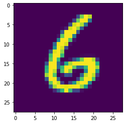
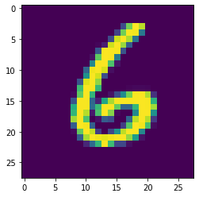
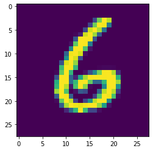

In this lab, you will use the sklearn module to create a model that classify handwritten digits.

We'll use the The MNIST Database which contains 60 000 labelized images of handwritten digits. Each image is 28x28 pixels. Each digit is centered in his image regarding the center of mass of the pixels and is resized to fit in a 20x20 box.
The images are store in train-images-idx3-ubyte.gz. First you need to decompress the .gz file. Then the data are store in binary format with the following layout (in big endian):
| Offset | Type | Value | Description |
|---|---|---|---|
| 0000 | 32 bit integer | 0x00000803 (2051) | magic number |
| 0004 | 32 bit integer | 60000 | number of images |
| 0008 | 32 bit integer | 28 | number of rows |
| 0012 | 32 bit integer | 28 | number of columns |
| 0016 | unsigned byte | ... | pixel |
| xxxx | unsigned byte | ... | pixel |
The corresponding labels are stored in train-labels-idx1-ubyte.gz with the following layout:
| Offset | Type | Value | Description |
|---|---|---|---|
| 0000 | 32 bit integer | 0x00000801(2049) | magic number |
| 0004 | 32 bit integer | 60000 | number of labels |
| 0008 | unsigned byte | ... | pixel |
| xxxx | unsigned byte | ... | pixel |
The labels values are 0 to 9.
Do the following exercices in a Jupyter Notebook File (.ipynb). You have to post your file on claco by the end of the lab.
struct module can help you.matplotlibpandas to check if the classes are balanced (mostly the same number of instance of each class)sklearn to do that.sklearn module contain implementations of many classification method. you have seen them during the theoretical course. Find one that give you best results. No need for long lasting training, I get good results with 10 seconds of training. The sklearn.metrics module can help you to quantify the results of your model.